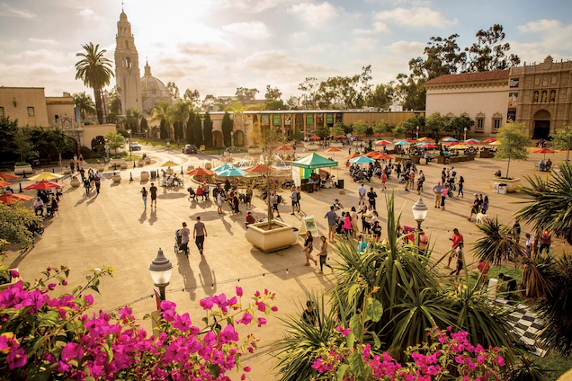
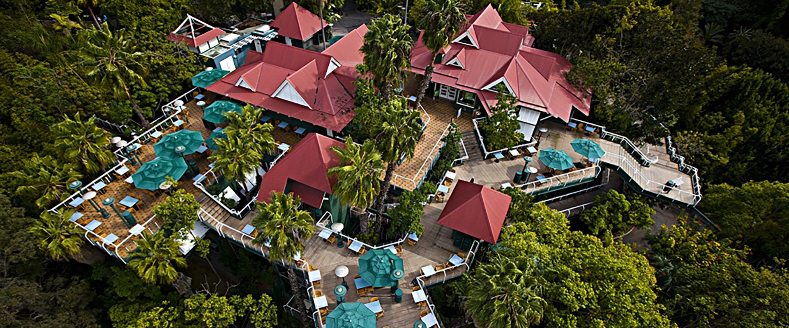
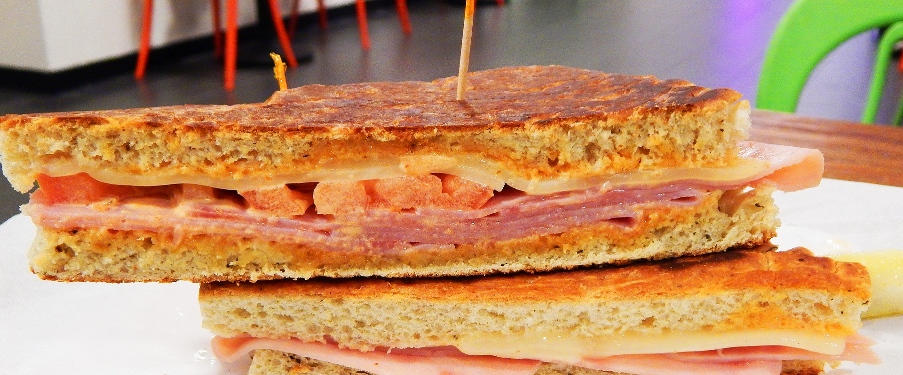
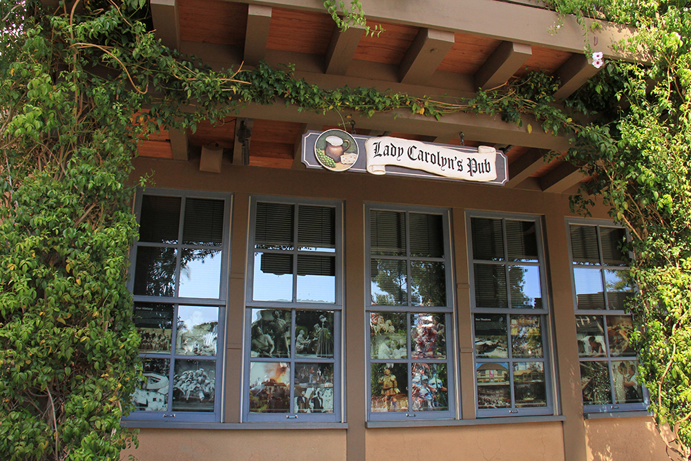
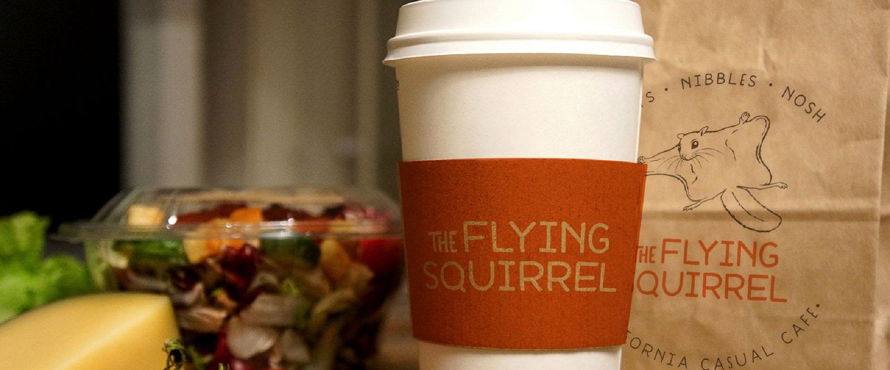
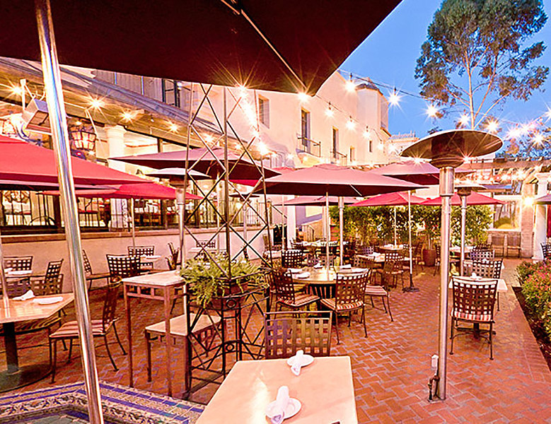
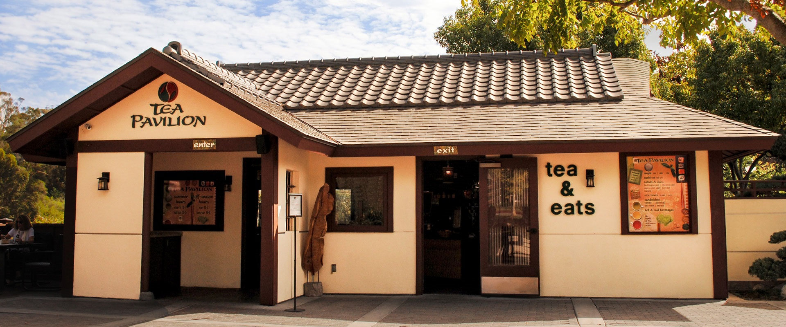

© Copyright 2021
Balboa Park
Alaska Airlines Flight Path Grill

2001 Pan American Plaza, San Diego, CA 92101
Hours
Saturday & Sunday 10 a.m. to 4:30 p.m.
Albert's Restaurant at the San Diego Zoo

Inside the San Diego Zoo, Gorilla Tropics
Hours
Monday through Friday from 11 a.m. to 3 p.m.
Saturday & Sunday from 10 a.m. to 3:30 p.m
* Reservation Recommended
Cafe in the Park

Casa del Balboa, between San Diego History Center and Museum of Photographic Art
Hours
Thursday through Sunday 9 a.m. to 4 p.m.
Craft Café

1439 El Prado, San Diego, CA 92101
Hours
Monday to Sunday 8:30 a.m. to 5 p.m.
Craveology
Daniel's Coffee
Lady Carolyn's Pub

1363 Old Globe Way, San Diego, CA 92101
Hours
Open one hour prior to each performance through the last intermission of the day
Panama 66 at The San Diego Museum of Art

1450 El Prado, San Diego, CA 92101
Hours
Sunday through Tuesday and Thursday 11 a.m. to 4 p.m., Bar 5 p.m.
Wednesday 4 p.m. to 9 p.m., Bar 10 p.m.
Friday through Saturday 11 a.m. to 9 p.m., Bar 9 p.m.
Prado Perk
Inside House of Hospitality, 1549 El Prado, San Diego, CA 92101
Hours
Monday 8 a.m. to 4 p.m.
Tuesday through Friday 8 a.m. to 5 p.m.
Saturday and Sunday 9 a.m. to 5 p.m.
The Flying Squirrel

Inside San Diego Natural History Museum
Hours
Friday through Tuesday 10 a.m. to 4 p.m.
Closed Wednesday and Thursday
The Prado at Balboa Park

1549 El Prado, San Diego, CA 92101
Hours
Tuesday through Saturday 11:30 a.m. to 7:30 p.m.
Sunday 11:30 a.m. to 5 p.m.
Closed on Monday
The Tea Pavilion at the Japanese Friendship Garden

2920 Zoo Drive, San Diego, CA 92101
Hours
Tuesday through Friday 11 a.m. to 3:30 p.m.
Saturday and Sunday 10:30 a.m. to 4 p.m.
Closed Monday